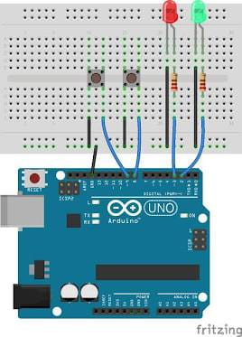

En este proyecto vamos a aprender a controlar un LED utilizando un botón conectado a Arduino.
Vamos a aprender a utilizar un botón como entrada y un LED como salida. Cuando presionemos el botón, el LED se encenderá.
Conectá el LED al pin digital 13 de Arduino utilizando una resistencia de 220Ω.
Conectá el botón al pin digital 2 y utilizá una resistencia de 10kΩ para conectarlo a GND.
int led = 13;
int boton = 2;
void setup() {
pinMode(led, OUTPUT);
pinMode(boton, INPUT);
}
void loop() {
int estado = digitalRead(boton);
if (estado == HIGH) {
digitalWrite(led, HIGH);
} else {
digitalWrite(led, LOW);
}
}Arduino revisa constantemente el estado del botón. Cuando el botón está presionado, recibe una señal y enciende el LED. Cuando dejamos de presionarlo, el LED se apaga.
Al presionar el botón, el LED se enciende. Al soltarlo, el LED se apaga.